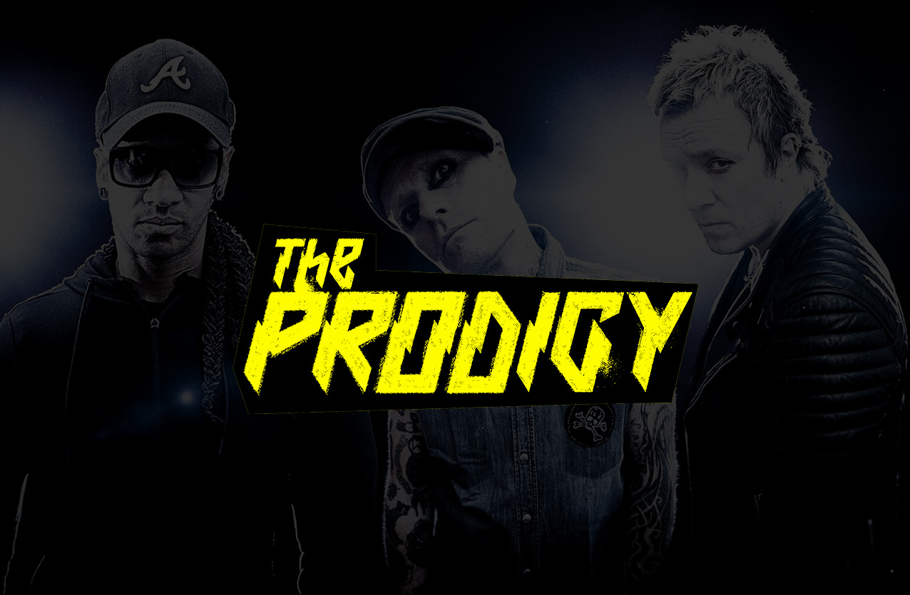

«The Prodigy» — британський культовий проект електронної музики. Їхня музика охоплює різні стилі: від рейву на початку 1990-х до денсу, альтернативного року і біг-біту з елементами панкового вокалу в пізніший період. Класичний склад гурту утворювали троє музикантів — композитор Ліам Гаулетт та вокалісти Кіт Флінт і Максим.[1] З 1990 по 2000 в гурті також працював танцюрист Лірой Торнхілл, а в ранні роки також вокалістка і танцюристка Шаркі. В березні 2019 Кіт Флінт наклав на себе руки.
Кіт Чарльз Флінт (англ. Keith Charles Flint, 17 вересня 1969, Брейнтрі, Ессекс, Велика Британія — 4 березня 2019, Ессекс, Велика Британія[4]) — англійський співак і танцюрист, найбільш відомий як вокаліст гурту The Prodigy. Флінт виконував основну партію у найуспішніших синглах The Prodigy — «Firestarter» і «Breathe», які були випущені у 1996 році. Був також відомий як власник та менеджер команди з мотоциклетного спорту — Traction Control, мотоциклами якої є Yamaha YZF-R6.
Ліам Пол Періс Гаулетт(англ. Liam Paul Paris Howlett, *21 серпня 1971, Брейнтрі, Велика Британія) — англійський автор пісень, музичний продюсер, засновник та лідер електронного гурту The Prodigy, а також ді-джей.
Кіт Палмер (Keith Palmer)(21 березня 1967) — краще відомий як Максим (Maxim) чи Максим Ріеліті (Maxim Reality), музикант гурту Prodigy.